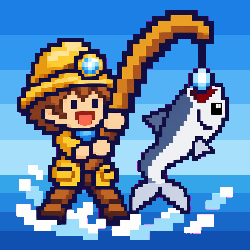
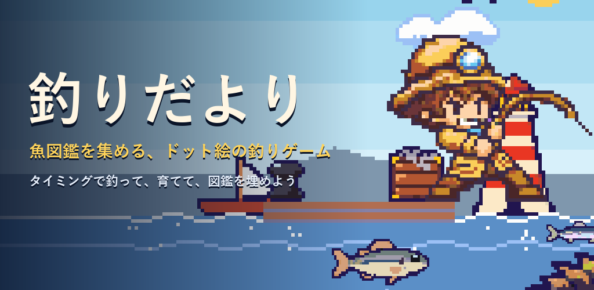
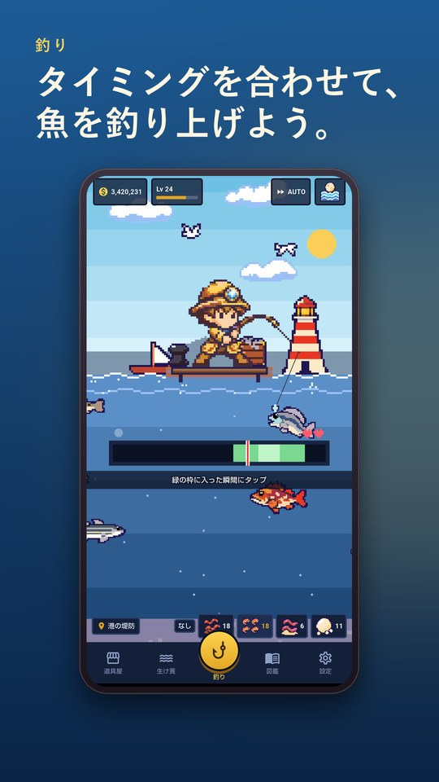
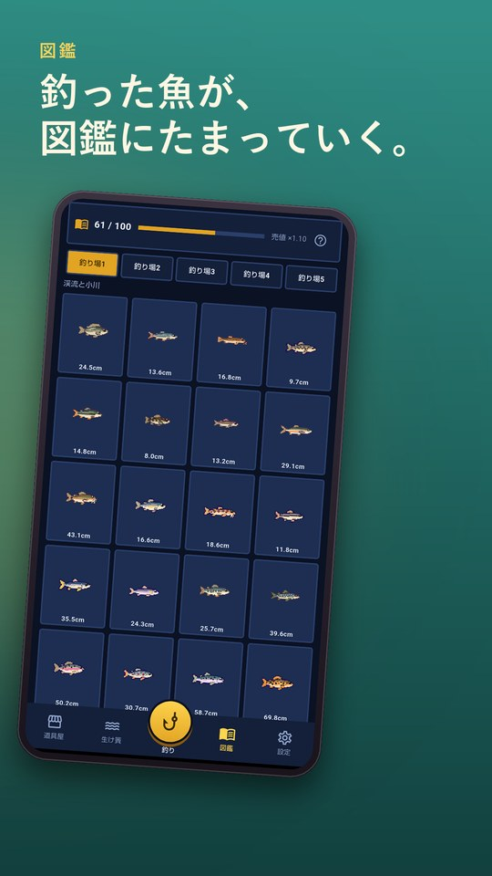
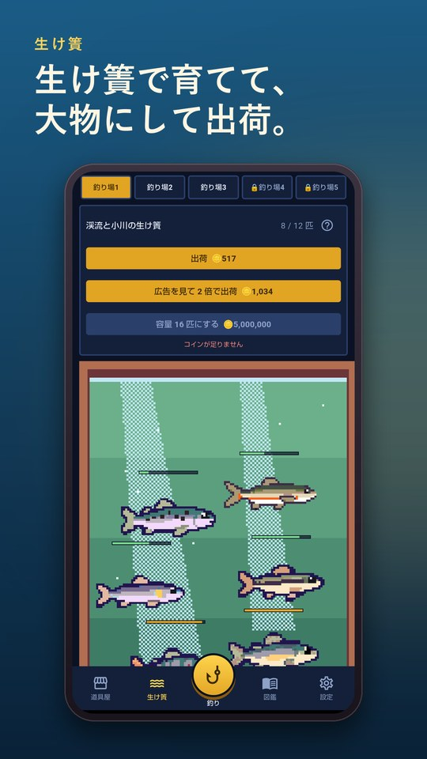
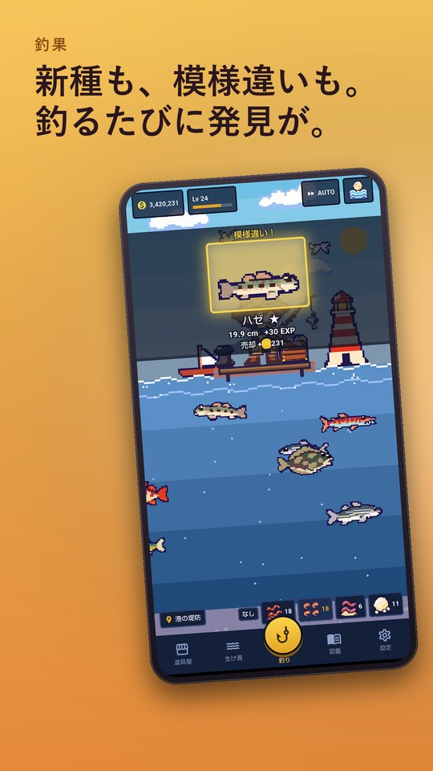
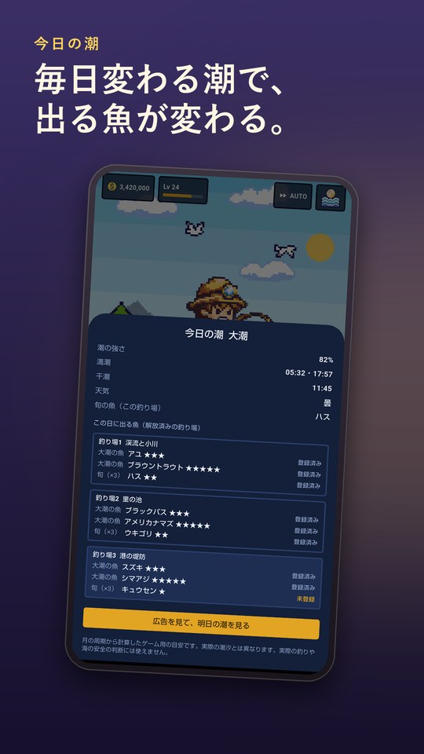
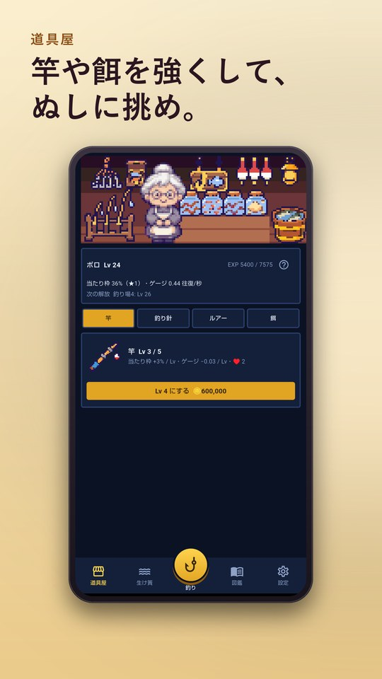

TSURIDAYORI
タイミングで釣って、育てて、図鑑を埋めよう。Time it, catch it, raise it — fill your encyclopedia.
ポロと一緒に釣り糸を垂らして、魚を釣って図鑑を埋めていく、ドット絵の釣りゲームです。Cast a line with Polo, reel in fish and fill your encyclopedia in this pixel-art fishing game.

How to play
画面をタップして竿を投げ、浮きが沈んで「!」が出たらもう一度タップ。ゲージの白い線が緑の枠に入った瞬間にタップすると、魚が釣れます。Tap to cast. When the float sinks and "!" appears, tap again. Tap the moment the white line is inside the green zone to land the fish.

釣った魚は図鑑にたまります。魚ごとの最大サイズ（魚拓）を更新したり、新種を見つけたりするのが楽しい。Every catch goes into your encyclopedia. Beat each fish’s record size and find new species.

生け簀で魚を育てて、大きくなってから出荷。売ったコインで、竿・釣り針・ルアー・餌を強くしましょう。Raise fish in the tank and ship them once they have grown. Use the coins to upgrade your rod, hook, lures and bait.

Features
大きい魚ほど、当たり枠が狭くなり、当てる回数も増えます。釣るほどレベルが上がり、枠が広く、ゲージがゆっくりに。Bigger fish have a narrower zone and need more hits. As you level up, the zone widens and the gauge slows down.
のどかな日本の渓流・池・堤防・荒磯・沖へ。各釣り場にひそむ「ぬし」は、めったにかからない大物です。Visit streams, ponds, piers, rocky shores and the open sea. The boss of each spot is a rare giant.
アプリを閉じている間も、生け簀の魚は育ちます。大きくなってから出荷しましょう。Fish in the tank keep growing while the app is closed. Ship them once they are big.
大潮や小潮の日にだけ現れる魚や、その日の旬の魚がいます。明日の潮は、広告を見ると先取りできます。Some fish appear only on spring or neap tide days, and each day has its in-season fish. Watch an ad to peek at tomorrow’s tide.
離れている間も釣りを続けられます（手動より控えめです）。Keep fishing while you are away (a little less effective than playing by hand).
場面ごとに案内が出ます。あとから読み直すこともできます。毎日 1 回、その日の餌ももらえます。Tips appear as you go, and you can reread them anytime. You also get the day’s bait once a day.
Screenshots
← スワイプまたはスクロールで確認できます← Swipe or scroll to see more



「今日の潮」について: 月の周期から計算した、ゲーム用の目安です。実際の潮汐とは異なり、実際の釣りや海の安全の判断には使えません。実際の釣りは、地域のルールと安全に従ってください。About "Today’s Tide": it is a game guideline calculated from the lunar cycle. It differs from real tides and cannot be used to decide about real fishing or safety at sea. When you fish for real, follow local rules and safety practices.
Story
個人で開発しています。タイミングを合わせて釣り上げる気持ちよさと、図鑑が少しずつ埋まっていく楽しさを、ドット絵のやさしい世界で味わえるように作りました。This game is developed by an individual. We wanted to let you enjoy the satisfaction of timing a catch and the joy of slowly filling an encyclopedia, in a gentle pixel-art world.
広告は、画面上部のバナーと、自分で選んで見る動画広告だけです。見なくても遊べます。課金はありません。詳しくはプライバシーポリシーをご覧ください。Ads are limited to a banner at the top of the screen and rewarded videos you choose to watch — you can play without watching. There are no in-app purchases. See the Privacy Policy for details.
こんな方に使っていただけたら嬉しいです。We hope you will enjoy it if you are:
FAQ
Contact
不具合の報告、機能のご要望、ご質問はお問い合わせフォームから受け付けています。Send bug reports, feature requests and questions through the contact form.
お問い合わせフォームへ →Go to the contact form →